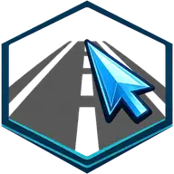

Choose your road
Start with the road type you need and adjust its main dimensions, lanes and sidewalks.
Pick a profile and make it yours.A procedural road-system generator for SketchUp with intersections, sidewalks, special lanes and automatic road markings.
Early Access · save 40€ · limited to the first 1,000 users.

Choose the road, add the details, draw the network and keep refining it without starting again.
Start with the road type you need and adjust its main dimensions, lanes and sidewalks.
Pick a profile and make it yours.Configure bike lanes, bus lanes, road markings, crosswalks and other elements before you start drawing. Everything is part of the same road system.
Everything is part of the same road system.Activate Road Click and simply click through your SketchUp model to define the route.
Click. Connect. Keep drawing.Combine different road types and create intersections naturally as the network grows. Road Click understands how the roads relate to each other.
Different roads. One connected network.Adjust intersections where needed or turn compatible junctions into roundabouts. The network adapts to your design.
The network adapts to your design.Generate the complete road network and keep working. Change a route, switch a road profile or modify a junction, then update the result without starting again.
Design your roads. Road Click builds the network.